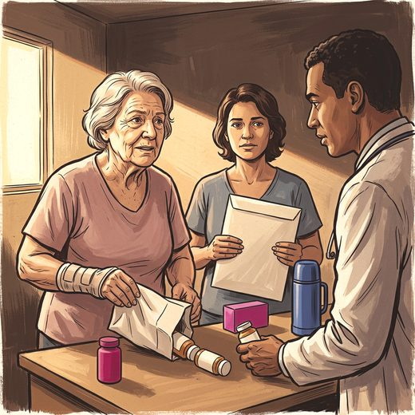

Consulta rápida à beira do leito
Condutas, doses e interações.
Referências da aula · 11
- LeBoff MS, Greenspan SL, Insogna KL, Lewiecki EM, Saag KG, Singer AJ, et al. The clinician's guide to prevention and treatment of osteoporosis. Osteoporos Int. 2022;33(10):2049-102. PMID 35478046. doi:10.1007/s00198-021-05900-y.PubMedDOI
- Demay MB, Pittas AG, Bikle DD, Diab DL, Kiely ME, Lazaretti-Castro M, et al. Vitamin D for the prevention of disease: an Endocrine Society clinical practice guideline. J Clin Endocrinol Metab. 2024;109(8):1907-47. PMID 38828931. doi:10.1210/clinem/dgae290.PubMedDOI
- LeBoff MS, Chou SH, Ratliff KA, Cook NR, Khurana B, Kim E, et al. Supplemental vitamin D and incident fractures in midlife and older adults. N Engl J Med. 2022;387(4):299-309. PMID 35939577. doi:10.1056/NEJMoa2202106.PubMedDOI
- Bolland MJ, Leung W, Tai V, Bastin S, Gamble GD, Grey A, et al. Calcium intake and risk of fracture: systematic review. BMJ. 2015;351:h4580. PMID 26420387. doi:10.1136/bmj.h4580.PubMedDOI
- Weaver CM, Alexander DD, Boushey CJ, Dawson-Hughes B, Lappe JM, LeBoff MS, et al. Calcium plus vitamin D supplementation and risk of fractures: an updated meta-analysis from the National Osteoporosis Foundation. Osteoporos Int. 2016;27(1):367-76. PMID 26510847. doi:10.1007/s00198-015-3386-5.PubMedDOI
- Chapuy MC, Arlot ME, Duboeuf F, Brun J, Crouzet B, Arnaud S, et al. Vitamin D3 and calcium to prevent hip fractures in elderly women. N Engl J Med. 1992;327(23):1637-42. PMID 1331788. doi:10.1056/NEJM199212033272305.PubMedDOI
- Jackson RD, LaCroix AZ, Gass M, Wallace RB, Robbins J, Lewis CE, et al. Calcium plus vitamin D supplementation and the risk of fractures. N Engl J Med. 2006;354(7):669-83. PMID 16481635. doi:10.1056/NEJMoa055218.PubMedDOI
- Zhao JG, Zeng XT, Wang J, Liu L. Association between calcium or vitamin D supplementation and fracture incidence in community-dwelling older adults: a systematic review and meta-analysis. JAMA. 2017;318(24):2466-82. PMID 29279934. doi:10.1001/jama.2017.19344.PubMedDOI
- Sanders KM, Stuart AL, Williamson EJ, Simpson JA, Kotowicz MA, Young D, et al. Annual high-dose oral vitamin D and falls and fractures in older women: a randomized controlled trial. JAMA. 2010;303(18):1815-22. PMID 20460620. doi:10.1001/jama.2010.594.PubMedDOI
- Bolland MJ, Grey A, Avenell A. Effects of vitamin D supplementation on musculoskeletal health: a systematic review, meta-analysis, and trial sequential analysis. Lancet Diabetes Endocrinol. 2018;6(11):847-58. PMID 30293909. doi:10.1016/S2213-8587(18)30265-1.PubMedDOI
- Montero-Odasso M, van der Velde N, Martin FC, Petrovic M, Tan MP, Ryg J, et al. World guidelines for falls prevention and management for older adults: a global initiative. Age Ageing. 2022;51(9):afac205. PMID 36178003. doi:10.1093/ageing/afac205.PubMedDOI